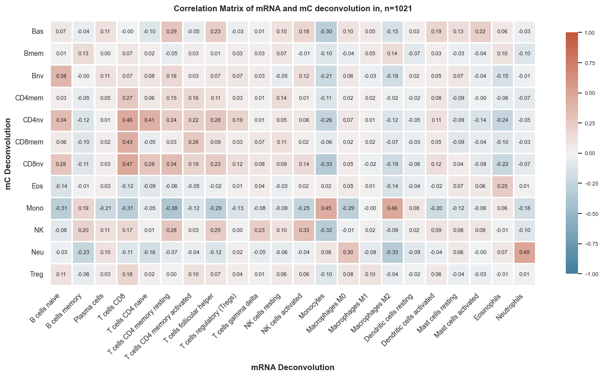
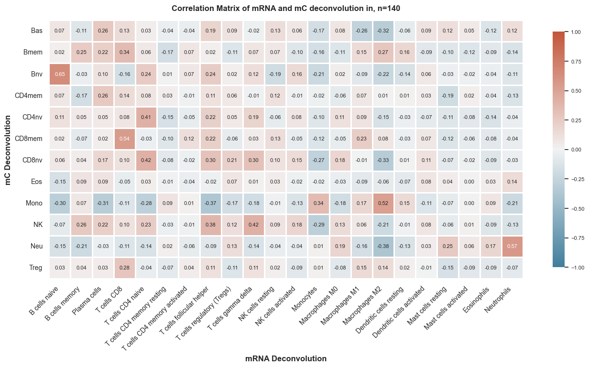
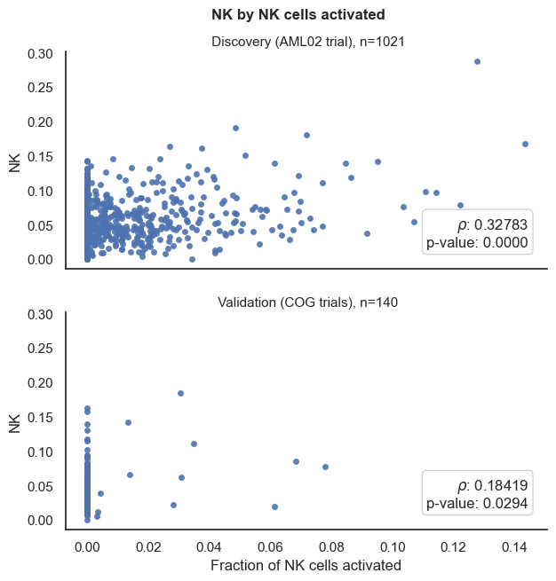
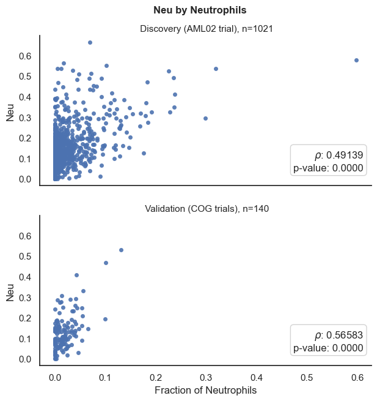

Deconvolution Visualization#
Where the data at?#
input_path = '../Data/Processed_Data/'
output_path = '../Data/Processed_Data/Cell_Deconvolution/'
Load Data#
We will start by loading the mC ARIC deconvolution data.
Show code cell source
import pandas as pd
# Read deconvolution results
deconv = pd.read_csv(output_path+'Results_TrainData_ARIC.csv', index_col=0)
deconv_test = pd.read_csv(output_path+'Results_TestData_ARIC.csv', index_col=0)
Show code cell source
# Get basic statistics of deconvolution results
round(deconv.T.describe(),2)
| cell types | Bas | Bmem | Bnv | CD4mem | CD4nv | CD8mem | CD8nv | Eos | Mono | NK | Neu | Treg |
|---|---|---|---|---|---|---|---|---|---|---|---|---|
| count | 1142.00 | 1142.00 | 1142.00 | 1142.00 | 1142.00 | 1142.00 | 1142.00 | 1142.00 | 1142.00 | 1142.00 | 1142.00 | 1142.00 |
| mean | 0.12 | 0.03 | 0.11 | 0.01 | 0.05 | 0.01 | 0.06 | 0.05 | 0.33 | 0.05 | 0.14 | 0.03 |
| std | 0.10 | 0.02 | 0.07 | 0.02 | 0.05 | 0.02 | 0.04 | 0.04 | 0.17 | 0.03 | 0.10 | 0.02 |
| min | 0.00 | 0.00 | 0.00 | 0.00 | 0.00 | 0.00 | 0.00 | 0.00 | 0.00 | 0.00 | 0.00 | 0.00 |
| 25% | 0.05 | 0.01 | 0.07 | 0.00 | 0.02 | 0.00 | 0.03 | 0.03 | 0.20 | 0.03 | 0.09 | 0.01 |
| 50% | 0.09 | 0.02 | 0.10 | 0.01 | 0.04 | 0.00 | 0.05 | 0.05 | 0.31 | 0.05 | 0.13 | 0.03 |
| 75% | 0.15 | 0.04 | 0.15 | 0.02 | 0.07 | 0.01 | 0.07 | 0.07 | 0.45 | 0.07 | 0.18 | 0.04 |
| max | 0.74 | 0.16 | 0.74 | 0.15 | 0.57 | 0.20 | 0.37 | 0.63 | 0.90 | 0.29 | 0.66 | 0.11 |
Show code cell source
round(deconv_test.T.describe(),2)
| cell types | Bas | Bmem | Bnv | CD4mem | CD4nv | CD8mem | CD8nv | Eos | Mono | NK | Neu | Treg |
|---|---|---|---|---|---|---|---|---|---|---|---|---|
| count | 204.00 | 204.00 | 204.00 | 204.00 | 204.00 | 204.00 | 204.00 | 204.00 | 204.00 | 204.00 | 204.00 | 204.00 |
| mean | 0.10 | 0.02 | 0.12 | 0.01 | 0.04 | 0.01 | 0.04 | 0.04 | 0.42 | 0.05 | 0.13 | 0.02 |
| std | 0.09 | 0.03 | 0.09 | 0.02 | 0.04 | 0.01 | 0.03 | 0.03 | 0.20 | 0.03 | 0.09 | 0.02 |
| min | 0.00 | 0.00 | 0.01 | 0.00 | 0.00 | 0.00 | 0.00 | 0.00 | 0.02 | 0.00 | 0.00 | 0.00 |
| 25% | 0.04 | 0.00 | 0.07 | 0.00 | 0.02 | 0.00 | 0.02 | 0.02 | 0.27 | 0.03 | 0.07 | 0.01 |
| 50% | 0.08 | 0.02 | 0.11 | 0.00 | 0.04 | 0.00 | 0.03 | 0.03 | 0.42 | 0.05 | 0.11 | 0.01 |
| 75% | 0.14 | 0.03 | 0.15 | 0.02 | 0.07 | 0.01 | 0.06 | 0.05 | 0.52 | 0.07 | 0.16 | 0.03 |
| max | 0.45 | 0.23 | 0.70 | 0.10 | 0.21 | 0.12 | 0.15 | 0.15 | 0.93 | 0.18 | 0.55 | 0.08 |
# Import Plotting Functions
from FM_Functions.Data_Visualization import *
---------------------------------------------------------------------------
ModuleNotFoundError Traceback (most recent call last)
Input In [5], in <cell line: 2>()
1 # Import Plotting Functions
----> 2 from FM_Functions.Data_Visualization import *
File ~\Desktop\Projects\Methylation_Project_v2\Code\FM_Functions\__init__.py:5, in <module>
3 from FM_Functions import Cox_Lasso_Function
4 from FM_Functions import Clinical_Data_CleanUp
----> 5 from FM_Functions import Data_Visualization
File ~\Desktop\Projects\Methylation_Project_v2\Code\FM_Functions\Data_Visualization.py:9, in <module>
6 # Import libraries
8 import numpy as np
----> 9 import seaborn as sns
10 import matplotlib.pyplot as plt
13 def draw_kaplan_meier(scorename, df, save_plot=False,
14 add_risk_counts=False, save_survival_table=False,
15 trialname=None, show_ci=False):
ModuleNotFoundError: No module named 'seaborn'
Show code cell source
deconv.index.name = None
deconv_test.index.name = None
draw_heatmaps(fig_title = 'Proportion of immune cell types in AML samples',
t1='Validation Cohorts', t2= 'Discovery Cohorts',
df1 = deconv_test, df2 = deconv,
save_plot=False, fig_number=1, figsize=(7,5))

Import CIBERSORTx Results#
Show code cell source
df = pd.read_csv(output_path+'COG_clinicaldata_ciberscore_FMcleaned.csv')
df_test = pd.read_csv(output_path+'AML02_clinicaldata_ciberscore_FMcleaned.csv',index_col=0).iloc[:,:22]
# break 'Mixture' column by '-' and add to df
df['Patient_ID'] = df['Mixture'].str.split('-', expand=True)[2]
# Set index to Patient ID
df = df.set_index('Patient_ID')
# Remove induction failure patients
df = df[df['Tumor Code'] == '20 - Acute myeloid leukemia (AML)']
# Select columns of interest
cibersortx = df.iloc[:,1:23].join(df[['LSC6','pLSC6_gb']])
y = pd.read_csv(input_path+'y.csv', index_col=0)
# Split data into training and test sets by clinical trial
y_train = y[~y['Clinical Trial'].isin(['AML02','AML08'])]
y_test = y[y['Clinical Trial'].isin(['AML02'])].reset_index().set_index('U133A.Dx.ID')
# Harmonize index of deconvolution results to match cibersortx
y_train2 = y_train.drop(columns=['pLSC6_gb']).join(cibersortx, how='inner', on='Patient_ID')
y_test2 = y_test.join(df_test, how='inner').set_index('index')
# Select columns containing cibersortx results
mRNA_deconv = y_train2.iloc[:,-24:-2]
mRNA_deconv_test = y_test2.iloc[:,-22:]
# Adjust index of deconvolution results to match y_train3
mC_deconv = deconv.T.loc[mRNA_deconv.index]
mC_deconv_test = deconv_test.T.loc[y_test2.index]
# Remove index name
mC_deconv_test.index.name = None
# y3 = y2.join(df[['LSC6','pLSC6_gb']], how='left', on='Patient_ID', rsuffix='_')
# # Concat deconv and deconv_test
# mC_deconv = pd.concat([deconv.T, deconv_test.T], axis=0)
# # Merge mC_deconv with y
# y2 = y.join(mC_deconv, how='inner')
# # Merge y2 with LSC6 info
# y3 = y2.join(df[['LSC6','pLSC6_gb']], how='left', on='Patient_ID', rsuffix='_')
# # Save y2
# y3.to_csv(output_path+'y_plus_cibersortx_ARICresults.csv')
Show code cell source
import numpy as np
import pandas as pd
from tqdm import tqdm
def compute_correlation(df1, df2):
"""
Computes the correlation between columns of two dataframes.
Returns a dataframe with the correlation values.
Parameters:
df1 (pandas.DataFrame): First dataframe.
df2 (pandas.DataFrame): Second dataframe.
Returns:
pandas.DataFrame: Dataframe with correlation values.
"""
# Compute the number of columns in each dataframe
n1, n2 = len(df1.columns), len(df2.columns)
# Initialize an empty dataframe to store correlation values
corr_df = pd.DataFrame(index=df1.columns, columns=df2.columns)
# Loop over the columns of each dataframe
for i in tqdm(range(n1)):
col1 = df1.iloc[:, i]
for j in range(n2):
col2 = df2.iloc[:, j]
# Compute the correlation between the two columns
corr = np.corrcoef(col1, col2)[0, 1]
# Store the correlation value in the appropriate position in the output dataframe
corr_df.iloc[i, j] = corr
return corr_df
df_corr = compute_correlation(mC_deconv, mRNA_deconv)
df_corr_test = compute_correlation(mC_deconv_test, mRNA_deconv_test)
100%|██████████| 12/12 [00:00<00:00, 285.21it/s]
100%|██████████| 12/12 [00:00<00:00, 273.37it/s]
Show code cell source
import matplotlib.pyplot as plt
import seaborn as sns
def plot_correlation_matrix(df_corr, num_samples):
"""
Plots a correlation matrix.
Parameters:
------------
df_corr (pandas.DataFrame):Dataframe containing correlation values.
num_samples (int): Number of samples used to compute the correlation matrix.
cohort (str): Name of the cohort used to compute the correlation matrix.
Returns:
------------
None
"""
sns.set_theme(style="white")
# Compute the correlation matrix
corr = df_corr.astype(float)
# Set up the matplotlib figure
f, ax = plt.subplots(figsize=(16, 16))
# Generate a custom diverging colormap
cmap = sns.diverging_palette(230, 20, as_cmap=True)
# Draw the heatmap with the mask and correct aspect ratio
sns.heatmap(corr, cmap=cmap, vmax=1, vmin=-1, center=0, annot=True,
square=True, linewidths=1, cbar_kws={"shrink": .4},
annot_kws={"fontsize":8}, fmt='.2f')
# Adjust colorbar font size
cbar = ax.collections[0].colorbar
cbar.ax.tick_params(labelsize=8)
# Adjust xticks text
plt.xticks(rotation=45, ha='right', fontsize='medium')
# Set plot specs
plt.title(f'Correlation Matrix of mRNA and mC deconvolution in, n={num_samples}',
fontsize='medium', y=1, fontweight='bold', pad=15)
ax.tick_params(axis='both', which='major', labelsize=10)
# Add axis labels
plt.ylabel('mC Deconvolution', fontsize='medium', fontweight='bold')
plt.xlabel('mRNA Deconvolution', fontsize='medium', fontweight='bold')
plot_correlation_matrix(df_corr, num_samples=len(mRNA_deconv))

plot_correlation_matrix(df_corr_test, num_samples=len(mRNA_deconv_test))

# Concat mC_deconv and mRNA deconv
mC_mRNA_deconv = pd.concat([mC_deconv, mRNA_deconv], axis=1, join='inner')
mC_mRNA_deconv_test = pd.concat([mC_deconv_test, mRNA_deconv_test], axis=1)
mC_mRNA_deconv
| Bas | Bmem | Bnv | CD4mem | CD4nv | CD8mem | CD8nv | Eos | Mono | NK | ... | Monocytes | Macrophages M0 | Macrophages M1 | Macrophages M2 | Dendritic cells resting | Dendritic cells activated | Mast cells resting | Mast cells activated | Eosinophils | Neutrophils | |
|---|---|---|---|---|---|---|---|---|---|---|---|---|---|---|---|---|---|---|---|---|---|
| 201005010090_R03C01 | 0.018571 | 0.097482 | 0.050667 | 0.000155 | 0.060141 | 0.023198 | 0.005343 | 0.026312 | 0.583287 | 0.060481 | ... | 0.174146 | 0.000000 | 0.001035 | 0.070450 | 0.000000 | 0.004721 | 0.018085 | 0.006314 | 0.142891 | 0.004537 |
| 201005010034_R05C01 | 0.067585 | 0.002435 | 0.234741 | 0.013072 | 0.029850 | 0.005613 | 0.060804 | 0.037241 | 0.265242 | 0.060201 | ... | 0.125846 | 0.014879 | 0.000000 | 0.000000 | 0.000000 | 0.005531 | 0.083392 | 0.130835 | 0.271948 | 0.054850 |
| 201005010090_R02C01 | 0.174972 | 0.045204 | 0.174080 | 0.010962 | 0.062962 | 0.000000 | 0.095039 | 0.053509 | 0.118253 | 0.151103 | ... | 0.183342 | 0.000000 | 0.002471 | 0.028794 | 0.004481 | 0.000000 | 0.165865 | 0.033646 | 0.087662 | 0.000000 |
| 201005010034_R06C01 | 0.085150 | 0.033223 | 0.131001 | 0.025426 | 0.036023 | 0.031154 | 0.083808 | 0.090728 | 0.300941 | 0.050988 | ... | 0.465513 | 0.000000 | 0.000000 | 0.095440 | 0.000000 | 0.000000 | 0.040288 | 0.008254 | 0.076989 | 0.061646 |
| 201005010090_R04C01 | 0.154857 | 0.013059 | 0.109019 | 0.023014 | 0.000000 | 0.052289 | 0.028277 | 0.039576 | 0.319903 | 0.058640 | ... | 0.270368 | 0.000000 | 0.009317 | 0.068413 | 0.000000 | 0.023050 | 0.000000 | 0.122364 | 0.175985 | 0.000000 |
| ... | ... | ... | ... | ... | ... | ... | ... | ... | ... | ... | ... | ... | ... | ... | ... | ... | ... | ... | ... | ... | ... |
| 02b94d3d-2b6f-4c7a-9554-8e6256ddc791_noid | 0.092219 | 0.026523 | 0.192480 | 0.015959 | 0.043589 | 0.000000 | 0.038094 | 0.044729 | 0.210119 | 0.089210 | ... | 0.288100 | 0.000000 | 0.004592 | 0.075718 | 0.000000 | 0.001027 | 0.000000 | 0.048436 | 0.147923 | 0.000000 |
| 0066d4af-8019-46a0-ba29-d2962c9537a7_noid | 0.114704 | 0.041093 | 0.154764 | 0.018060 | 0.135336 | 0.000174 | 0.030928 | 0.006422 | 0.188139 | 0.143315 | ... | 0.071742 | 0.000000 | 0.007779 | 0.057803 | 0.019072 | 0.000000 | 0.100177 | 0.000000 | 0.219573 | 0.011373 |
| e844b417-c4ad-41db-b361-e93e3c88d3f3_noid | 0.011145 | 0.056362 | 0.065166 | 0.017337 | 0.059695 | 0.005207 | 0.090886 | 0.006766 | 0.609452 | 0.033873 | ... | 0.547315 | 0.001495 | 0.000000 | 0.024435 | 0.000000 | 0.004484 | 0.008354 | 0.000000 | 0.133112 | 0.000000 |
| 2483113d-8f2a-4a3c-b394-b734019c9c41_noid | 0.063665 | 0.000000 | 0.176353 | 0.000000 | 0.022453 | 0.000000 | 0.058100 | 0.006671 | 0.457912 | 0.041548 | ... | 0.298019 | 0.000000 | 0.000000 | 0.015906 | 0.000000 | 0.004651 | 0.000022 | 0.030713 | 0.050097 | 0.000000 |
| 46bb9fca-6d17-4c35-a800-bf590c12edf1_noid | 0.127551 | 0.040289 | 0.132544 | 0.020641 | 0.074930 | 0.008205 | 0.040858 | 0.075969 | 0.256002 | 0.080982 | ... | 0.212893 | 0.013453 | 0.000141 | 0.014126 | 0.001277 | 0.003421 | 0.092049 | 0.015162 | 0.120695 | 0.006009 |
1021 rows × 34 columns
mRNA_deconv.columns.to_list()
['B cells naive',
'B cells memory',
'Plasma cells',
'T cells CD8',
'T cells CD4 naive',
'T cells CD4 memory resting',
'T cells CD4 memory activated',
'T cells follicular helper',
'T cells regulatory (Tregs)',
'T cells gamma delta',
'NK cells resting',
'NK cells activated',
'Monocytes',
'Macrophages M0',
'Macrophages M1',
'Macrophages M2',
'Dendritic cells resting',
'Dendritic cells activated',
'Mast cells resting',
'Mast cells activated',
'Eosinophils',
'Neutrophils']
mC_deconv.columns.to_list()
['Bas',
'Bmem',
'Bnv',
'CD4mem',
'CD4nv',
'CD8mem',
'CD8nv',
'Eos',
'Mono',
'NK',
'Neu',
'Treg']
draw_scatterplot(df_train=mC_mRNA_deconv,df_test=mC_mRNA_deconv_test,
x='NK cells activated',y='NK',
hue=None, s=25, save_plot=False)

mC_mRNA_deconv_test['NK cells activated'].describe()
count 140.000000
mean 0.002646
std 0.011337
min 0.000000
25% 0.000000
50% 0.000000
75% 0.000000
max 0.078050
Name: NK cells activated, dtype: float64
draw_scatterplot(df_train=mC_mRNA_deconv,df_test=mC_mRNA_deconv_test,
x='Neutrophils',y='Neu',
hue=None, s=25, save_plot=False)

draw_scatterplot(df_train=mC_mRNA_deconv,df_test=mC_mRNA_deconv_test,
x='NK cells activated',y='NK',
hue=None, s=25, save_plot=False)